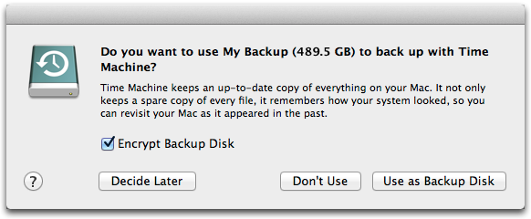
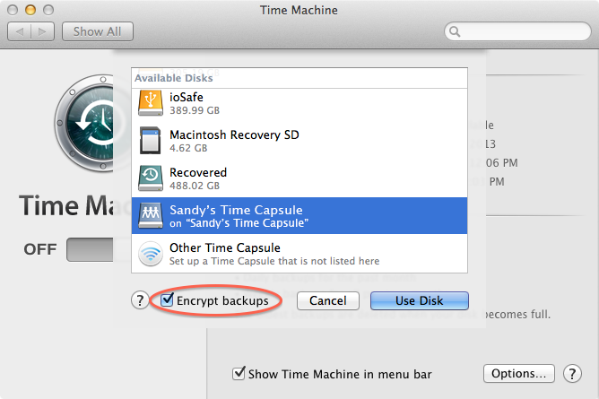
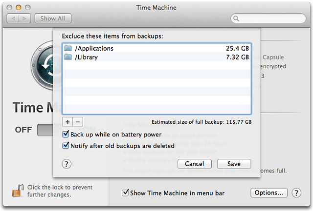
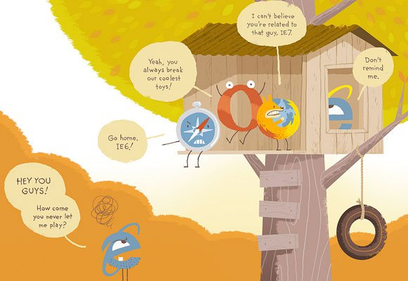

“What we have to learn to do, we learn by doing.” -- Aristotle
Back It Up: Time Machine VS. Imaging
I learned a very hard lesson while I was back in college: "Back up your SH!T". Everything. Twice. Tres. As many times as you can. Then, dig a hole somewhere and bury it in multiple places or simply send it to a cloud server. My 500GB Western Digital hard drive had broke with two years worth of artwork on it. I took it to TechServe to see if they can retrieve any info from it and they told me it would cost about $400 and no guarantees that all the files would be gathered from the dead drive. Kill me. They'll probably just tell me my life isn't even worth that much.
Ever since joining the Flatiron School, the amount of software and work that is saved on my Apple laptop is gynormous and recently the browser tabs has been flickering. To be safe, I've been looking at a couple options and was wondering the differences between using Apple's Time Machine and making an image of my computer. (I am using OS X 10.8.5.)
Time Machine
The OS X Time machine is a built in backup feature that works on the Mac or an external hard drive. When you connect an external hard drive to Time Machine, allow it to use it and let it do it's job. It automatically backs up your system files, applications, accounts, preferences, email, media, photos and document files. The awesome thing about Time Machine is that it keeps track of how your system looks and everything currently present on your computer. After that, it keeps incremental back ups to any modified or new files. It creates a snapshot of the entire system at a given time.
Time Machine Using an External Drive
When you first connect your external hard drive, a dialog box should show up.

To use the drive as a backup, simply just click on the "Use as Backup Disk" button.
** If you had previously hit the "Don't Use" button, you can go to "System Preferences" in your dock or find it in Spotlight. Then, select "Time Machine." >> Toggle the "On/Off" switch to "ON." (A list should slide down with your external drive listed on it.) >> Select your drive. **

**Encrypt Backups: This is for extra security when you backup your system. It will prompt you to set up a password and a password hint. This feature is only available for Time Capsule, partitions and disks attached directly to your computer. If it is grayed out, you can hover your mouse over the checkbox and an explanation will pop out. **
To exclude certain files/folders from the backup, you can click on "Options" in the Time Machine dialog box. This enables you to select items that want Time Machine to avoid.

Click "Save" and you are all set up!
Note that the Time Machine does not keep all the backups forever and it doesn't tell you when it deletes them. It is also not bootable, meaning that all files and system info must be restored/ reinstalled to be accessed.
Disk Imaging
What is Disk Imaging? Disk imaging is computer files that contain the structure of a disk volume of the entire storage device. It is created by making a sector-by-sector copy of the contents from the original storage device. It is bootable. If your hard drive fails, you can boot from the clone immediately, containing everything that was present at the time of the clone. Images are snapshots of the entire disk. It doesn't incrementally backup new files/data. So, in order to keep track of new or modified files/data, you would have to create another image, which could be time consuming. It is recommended to make an image once a day since the procedure can be lengthy. But there are some softwares out there that make this process a little simplier.
-It creates an exact, bootable backup of the Mac OS X boot drive.
-Because it supports block-by-block cloning, it copies everything faster.
-After the first backup, it can sync changes and updates the backups.
-It archives old/deleted versions of files.
-You can backup data to any hard drive or even somewhere on the internet.
-You can schedule backup tasks.
-Great, easy-to-use graphic user interface.
-You can encrypt backups.
-It can handle incremental backups and partial backups.
Super Duper $Free (but can unlock features for $27.95)
Why it's awesome:
-Creates a bootable backup.
-Clear and friendly interface.
Buying a couple hard drives still beats paying $400.00 for a unguaranteed attempt to retrieve info. So, set one up to use Time Machine and if you are able to pay for one of these disk cloning softwares, it doesn't hurt to have additional backups especially since we are in the tech field now. Go back that Mac up! Or kill yourself when you have that FML moment.
June 26, 2014
“Before software can be reusable it first has to be usable.” -- Ralph Johnson
Lame-O Robo 4000
Introducing the world's most useless robot! In class, I was working on a JavaScript lab which required us to create a Robot name generator that returned two characters and three digits. I am not so good with being creative with names, titles, etc. (The name of this blog post should give you a hint.) So, we created a random name generator using some JavaScript Math methods and some String methods.
The first requirement was for it to generate two letters. There was two ways I could've gone about it:
Put the entire alphabet in a long string like so, and randomly select one. Like so:
var alpha = "ABCDEFGHIJKLMNOPQRSTUVWXYZ";
Use ASCII (American Standard Code for Information Interchange) numbers to generate the letters for us. If you don't know what ASCII text is, check out www.ascii-code.com. So, because we want to generate letters, well use the ASCII codes 65 - 90 (for all uppercases letters).
The ASCII code represents the character you want to type. In JavaScript, there is an awesome String method that uses ASCII code to render a character. It is the String.fromCharcode() method. This method takes any amount of arguments as long as you separate them using a comma. So, if I wanted to write my name using the ASCII code, this is what it would look like.
var myname = String.fromCharCode(83,97,110,100,121);
return myname();
=> "Sandy"
Try it out. Yes. It's "String.fromCharCode(77,97,103,105,99);"!
But we still haven't accomplish what we need to do. Both ways of getting the characters are great, but I didn't want static input of the characters. In example 1, since we have the entire alphabet in a string, we can randomly select two characters in a string and store it inside a variable using a for loop.
var alpha = "ABCDEFGHIJKLMNOPQRSTUVWXYZ";
var letters = "";
var i;
for (i = 0; i < 2; i++){
letters += alpha.charAt(Math.floor(Math.random() * alpha.length));
};
Here, we created a name variable with an empty string so that we can hold the generated characters. Then, we declared a variable for the for loop. In the for loop, since we only want it to loop it twice, we will set the condition to loop through the code block twice. Inside the code block, we take the alphabet string and use the charAt() method to locate a letter at a given position in the string. If we wanted to know the letter in position 1, we would write:
alpha.charAt(1);
=> "B"
In our case, we want it to randomly generate the position for us. Any position is a number, so we used the Math.random() method to help generate the number for us. The Math.floor() method just rounds the generated number down so we won't not have to deal with floating point numbers. And if you're wondering how the Math.random() method knows what number to generate up to, it is defined when we stated * alpha.length.
At this point, if we return our variable "name", it should give us our two letters! If it doesn't, shut the computer down, open your window and toss it.
If we the second example to generate our letters using the ASCII codes, here's how we can use it:
var letter1 = Math.floor((Math.random() * 25) + 65);
var letter2 = Math.floor((Math.random() * 25) + 65);
var letters = String.fromCharCode(letter1,letter2);
return letters
Here, we set two variables to randomly generate a number between 65 - 90. (Remember, we want these numbers because it's the ASCII code for the alphabet). Then we pass those two variables into our String.fromCharCode() method.
Yayyy! So either way we should have our two letters. Now that we know how to generate random numbers. The second part of the assignment should be a breeze. Now, we need a random string of three numbers.
Since we want a three numbers we an just try to generate a number from 100 - 999. This way we don't have to generate each number from 1 - 10 three times, but that is an option.
Finally, we have our characters generated and our numbers generated. Let's concatenate them together and we got ourselves a Robot Name thing thing.
var name = letters + numbers;
return name;
=> FU300
Taadaa! The most useless thing ever made. Maybe you can make something more useful!
June 8, 2014
“You've baked a really lovely cake, but then you've used dog shit for frosting.” -― Steve Jobs
HTML
My first encounter with HTML was back when I was discovering how to pimp out my Myspace.com page. It was just a bunch of randomness but I did manage to get some cool background image sparkly .gif thing going on. Good enough.
Yes... This used to be cool. I was cool.
Years later, who would have thought I would run into HTML again. This time, a formal introduction... HTML 4. Fast forward. Now, HTML 4 is like an ex-boyfriend who you dumped and ran into... looking finer than when you left him. All matured and swagged out. His name is now "HTML 5." So, what has changed?
Graceful Degradation and Progressive Enhancement. Fancy.
Graceful Degragation and Progressive Enhancement are two different perspectives on how the web should be built and what it focuses on.
Graceful Degradation focuses on building the website for the most advance and capable browsers. Older browsers were not priority, so it would be restricted to the previous version of the site. The site would probably still work and still deliver information to the client but it might miss out on the cool new features that might have been added on to the new site.
 Browsers
On the other hand, Progressive Enhancement focuses on the content of the site. Its main focus is on what should be delivered to the client regardless of what browser a client is using. No judgement zone. In order to focus on content, there is a layering system used to build a site using this perspective. Layer 1 would be the content and structuring of the content in which the site should deliver to the client. It should essentially offer basic experience to the user. HTML. Layer 2 would be the presentation of the site. CSS. The Last Layer is the interactive fancy smancy stuff, letting the user manipulate and interact with the content and it's presentation layer. JavaScript. It focuses on giving a universal experience as much as possible across all browsers.
Semantics
When structuring content in HTML, we want to make sure that everything that is on the page is meaningful. In HTML 4, all our content are separated by div tags. DIVS DON'T MEAN JACK. It's just a nice way to separate the building blocks of the site. This is where the improvements of HTML 5 kicks in. Let's take a look at some of the differences in between the two versions of the markup.
!DOCTYPE
HTML 4
<!DOCTYPE HTML PUBLIC "-//W3C//DTD HTML 4.01 Transitional//EN" "http://www.w3.org/TR/html4/loose.dtd">
In HTML 4, divs are used to section off every piece of a website. It doesn't really have any specific meaning in regards of what the content within really does. We would typically identify what the div was used for using the class attribute. For example, to tell a div that they were going to hold the contents of the navigation, it would be written like so: <div class="nav"> </div> But with HTML 5, it is packaged with new elements that all called what they are for. So for the nav example, wouldn't it be nice to have a <nav> </nav>? Done. Using HTML 5 elements will help give your html page more semantic meaning.
HTML 5 has also incorporated <video> </video>, <audio> </audioo>,and the <canvas> </canvas> so that we no longer have to add in plugin media players to play a video or a mp3 file. It has also pushed Flash off the web wth the canvas, which enables animation & interactive capabilities using JavaScript. Instead of doing all the work in Flash with ActionScript then exporting it out of Flash... yada yada... all for it to show up on the web. Browsers are adapting to what HTML 5 has to offer.
I really enjoy playing around with the Front-end... pause... you know what I meant. Being able to code and see the progress every step of the way is what helps me get excited about the end result. The capabilities of HTML 5 has definitely changed the game with all it's new features and semantics, making it easier to understand the flow and usage of each element versus dumping it on your HTML page... just because. Go pimp out your Myspace page now. Did you just ask me what Myspace is?
May 21, 2014
“Sometimes it pays to stay in bed on Monday, rather than spending the rest of the week debugging Monday's code." -- Christopher Thompson
Ruby & JavaScript Equivalents
Ruby is such an awesome programming language because it offers so many predefined methods for you to use for Strings, Arrays, Numbers, etc. I find myself when coding in JavaScript still using Ruby methods and sit there pulling my hair out wondering why my code doesn't work. So let's look at some predefined Ruby methods and see if JavaScript has anything that does the same thing. Exciting.. ehh?
Numbers
To return the smallest integer greater than the number.
Ruby: .ceil
1.2.ceil
=> 2
JavaScript: Math.ceil();
Math.ceil(1.2);
=> 2
To check if a number is even.
Ruby: even?
4.even?
=> true
JavaScript: AHHHH! No such method. Let's write our own.
function isEvenNum(num){
var num = num; //4
if (num % 2 === 0){
return true;
}
else{
return false;
}
};
=> true
To return the smallest integer less than the number.
Ruby: .floor
5.7.floor
=> 5
JavaScript: Math.floor();
Math.floor(5.7);
=> 5
To check if an object is a integer.
Ruby: .integer?
5.7.integer?
=> false
JavaScript: AHHHH! No such method. Let's write our own.
function isInteger(num){
var num = num; //5.7
return typeof num === 'number' && num % 1 === 0;
};
=> false
To round a floating number to the nearest integer.
Ruby: .round
45.3.round
=> 45
JavaScript: Math.round();
Math.round(45.3);
=> 45
To convert an number into a string.
Ruby: .to_s
14587.to_s
=> "14587"
JavaScript: .toString();
14587.toString();
=> "14587"
Strings
To convert the entire string to its lower case form.
Ruby: .downcase
"HELLO".downcase
=> "hello"
JavaScript: .toLowerCase();
"HELLO".toLowerCase();
=> "hello"
To replace letters in a string.
Ruby: .gsub
"Hello".gsub("l", "@")
=> "He@@o"
JavaScript: .replace();
"Hello".replace(/l/g, "@");
=> "He@@o"
To find the index of a character.
Ruby: .index
"Hello".index("e")
=> 1
JavaScript: .search();
"Hello".search("e");
=> 1
To return a substring.
Ruby: .slice
"Hello".slice(4)
=> "o"
JavaScript: .slice();
"Hello".slice(4);
=> "o"
To remove whitespaces from the beginning and the end of the string.
Ruby: .strip
" Hello ".strip
=> "Hello"
JavaScript: .trim();
" Hello ".trim();
=> "Hello"
* To swap cases of each letter in a string.
Ruby: .swapcase
"hEllO".swapcase
=> "HeLLo"
JavaScript: AHHHH! No such method. Let's write our own.
function swapCase(str) {
var str = str //"hEllo"
var new_str ='';
for (var i = 0; i < str.length; i++){
if (str[i] === str[i].toUpperCase()){
new_str += str[i].toLowerCase();
}
else{
new_str += str[i].toUpperCase();
}
}
}
=> "HeLLo"
To convert a string to an integer.
Ruby: .to_i
"4587".to_i
=> 4587
JavaScript: parseInt();
var str_num = "4587"
parseInt(str_num);
=> 4587
To convert the entire string to its lower case form.
Ruby: .upcase
"hello".upcase
=> "HELLO"
JavaScript: .toUpperCase();
"hello".toUpperCase();
=> "HELLO"
There are still plenty more methods that Ruby has that JavaScript may or may not have, but these are the ones that I frequently use and find the most helpful. So keep exploring what both languages have to offer!
May 7, 2014
“Any fool can write code that a computer can understand. Good programmers write code that humans can understand.” -- Martin Fowler
What is a Flowchart?
We have encounter many flowcharts in our life. Remember, back when you were in junior high school when you wondered if that cute new kid in class liked you? Well, let's flip to page 97 in the Seventeen magazine and take the quiz!
Did you dress like a slut? YES OR NO... NO... Well, it probably told you they didn't like you and you should change yourself. Let's not make flowcharts that make people want to kill themselves. Let's use it for programming!
This breaks the "Don't be an ASSHOLE!" Flatiron rule.
A flowchart is a graphic representation of a process organized by geometric shapes. In the instance of programming, you can think of it like the GUI of pseudo code. It shows the steps in boxes or levels that are connected by arrows. Each box is a thought or an action. A flowchart serves as a blueprint for the information we are presenting.
Components of a basic flowchart
There are a couple main geometric shapes that make up the flowchart:
Example Flowcharts
If/Else Statement
Code:
x = 1
if x < 5
puts "Hi"
else
puts "Bye"
end
While Loop
Code:
x = 1
while x < 5
puts "Hi"
x += 1
end
Let's go with the flow and solve something
Pseudo code:
Initialize passes to zero
Initialize failures to zero
Initialize student to one
While student counter is less than or equal to ten
Input the next exam result
If the student passed
Add one to passes
Else
Add one to failures
Add one to student counter
Print the number of passes
Print the number of failures
If eight or more students passed
Print "raise tuition"
We did it!
Code
students = 0
passes = 0
fails = 0
while students < 10
puts "Please enter the exam grade."
grade = gets.chomp.to_i
if grade >= 65
passes +=1
students += 1
else
fails +=1
students += 1
end
end
puts "The number of students that passed: #{passes} and the number of students who #{fails}."
if passes >= 8
puts "We request to raise the tuition, we fancy huh?"
else
puts "We failed, we should kill ourselves."
end
Benefits of using a flowchart
Focus on the logic rather than syntax
Helps analyzes the problem
Now go make awesome flowcharts to create master plans.. I don't know... how to get back at an ex or something useful.


 THE FLATIRON LIFE : BK-001
THE FLATIRON LIFE : BK-001